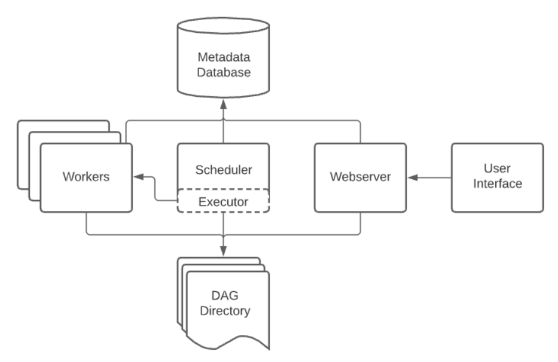

BashOperator - executes a
bash command
EmailOperator - sends an email
HttpOperator - sends an HTTP
request
PostgresOperator - executes a
Postgres query
S3FileTransformOperator -
executes a S3 file
transformation
S3KeySensor - waits for a
S3 key to appear
...
PythonOperator - executes a Python function
Example DAG using PythonOperator
The example would be a workflow with three tasks described:
- Task 1 (Add): Calculates f(2) where f(x) = x + x.
- Task 2 (Multiply): Calculates f(3) where f(x) = x * x.
- Task 3 (Sum): Calculates f(a, b) = a + b where a = Task1 result and b = Task2 result.
The implementation:
from airflow.operators.python import PythonOperator
from airflow.models import DAG
from datetime import datetime, timedelta
dag = DAG(
dag_id='test_dag_v02',
default_args={
'owner': 'david',
'retries': 0,
'retry_delay': timedelta(minutes=5)
},
start_date=datetime(2023, 2, 24),
schedule_interval='@daily',
)
add = PythonOperator(
task_id='add',
python_callable=add_impl,
op_args=[2],
dag=dag)
def add_impl(a):
return a + a
multiply = PythonOperator(
task_id='multiply',
python_callable=multiply_impl,
op_args=[3],
dag=dag)
def multiply_impl(a):
return a * a
sum = PythonOperator(
task_id='sum',
python_callable=sum,
dag=dag)
def sum(**kwargs):
ti = kwargs['ti']
a = ti.xcom_pull(task_ids='add')
b = ti.xcom_pull(task_ids='multiply')
return a + b
[add, multiply] >> sum
#sum.set_upstream(add)
#sum.set_upstream(multiply)
... better alternative- TaskFlow API
from datetime import datetime, timedelta
from airflow.decorators import dag, task, task_group
from airflow.models.dag import DAG
@dag(
dag_id='test_dag_v01',
default_args={
'owner': 'david',
'retries': 0,
'retry_delay': timedelta(minutes=5)
},
start_date=datetime(2023, 2, 24),
schedule_interval='@daily',
)
def simple_dag():
@task()
def add(a):
return a + a
@task()
def multiply(a):
return a * a
@task()
def sum(a, b):
return a + b
return sum(add(2), multiply(3))
simple_dag()

Components
- Scheduler
- Executor
- Webserver
- Worker
- Database
Scheduler
Handles both triggering scheduled DAGs, and submitting Tasks to the executor to run.
Executor
Responsible for running the tasks that were sent by the scheduler.
In the default Airflow installation, this runs everything inside the scheduler, but most production-suitable executors actually push task execution out to workers.
Worker
The worker is a process that runs tasks that are sent to it by the scheduler.
It can run in the same machine as the scheduler, or in a different machine.
Webserver
The webserver is a lightweight Flask application that serves the Airflow UI.
Metadata database
The metadata database is a relational database that stores all the metadata about the tasks, DAGs, and the state of the system.
Using Poetry
Airflow DOESN'T support native Windows. However, you can setup it using Windows Subsystem for Linux (WSL)
poetry config --list
poetry config virtualenvs.in-project true
poetry init
poetry add apache-airflow
poetry add apache-airflow-providers-docker==2.5.1
poetry add apache-airflow-providers-apache-cassandra==3.1.1
poetry add apache-airflow-providers-mysql
poetry shell
export AIRFLOW_HOME=$PWD
airflow db init
airflow users create --username admin --firstname admin --lastname admin --role Admin --email admin@admin.com
airflow webserver -p 8082 -D
airflow scheduler -D
Using Docker
curl -LfO 'https://airflow.apache.org/docs/apache-airflow/2.5.1/docker-compose.yaml'
docker-compose up airflow-init
docker-compose up